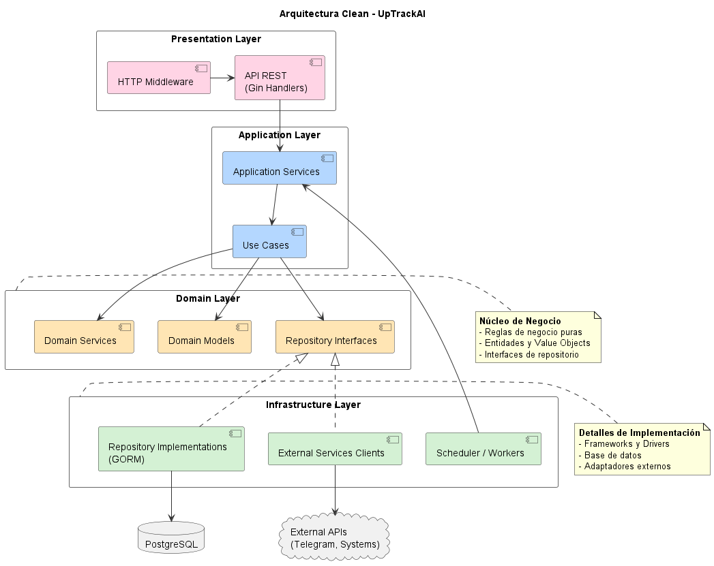

4 Backend y Servicios
El backend de UpTrackAI está construido en Go 1.21+, aprovechando su modelo de concurrencia nativo para ejecutar health checks en paralelo de manera eficiente.
4.1 Arquitectura de Componentes (C4 Nivel 3)
El siguiente diagrama detalla los módulos internos del Backend API y sus interacciones.

4.2 Arquitectura de Módulos
El sistema está organizado en módulos independientes, cada uno siguiendo Clean Architecture internamente.

4.2.1 Estructura de Directorios
backend/
├── main.go # Punto de entrada
├── config/ # Configuración de infraestructura
│ ├── database.go # Conexión PostgreSQL
│ ├── migrations.go # Auto-migraciones GORM
│ ├── server.go # Configuración HTTP
│ └── telemetry.go # Observabilidad
├── internal/
│ ├── app/ # Utilidades compartidas (APIResponse)
│ ├── monitoring/ # Módulo de monitoreo
│ │ ├── domain/ # Entidades y reglas de negocio
│ │ ├── application/ # Casos de uso y DTOs
│ │ ├── infrastructure/# Repositorios PostgreSQL
│ │ ├── presentation/ # Handlers HTTP
│ │ └── scheduler/ # Orquestador de health checks
│ ├── notifications/ # Módulo de notificaciones
│ │ ├── domain/ # AlertEvent, Channels, Senders
│ │ ├── application/ # NotificationService, Linking
│ │ ├── infrastructure/# Telegram API, Repos
│ │ └── presentation/ # Webhooks y handlers
│ ├── security/ # Autenticación y autorización
│ │ ├── domain/ # Credentials, Tokens
│ │ ├── application/ # AuthService
│ │ ├── infrastructure/# JWT, Bcrypt
│ │ └── presentation/ # Login/Register handlers
│ ├── user/ # Gestión de usuarios
│ └── server/ # Middleware compartido
└── docs/ # Swagger generado4.3 Módulo de Monitoreo
4.3.1 Entidades de Dominio
MonitoringTarget - Representa un servicio a monitorear:
type MonitoringTarget struct {
userId UserId
targetId TargetId
name string
url string
isActive bool
previousStatus TargetStatus // Para detectar cambios
currentStatus TargetStatus
createdAt time.Time
lastCheckedAt time.Time
lastResponseTime int // ms
targetType TargetType // API | WEB
configuration *CheckConfiguration
}CheckResult - Resultado de una verificación individual:
type CheckResult struct {
id CheckResultId
targetId TargetId
timestamp time.Time
responseTimeMs int
reachable bool
status TargetStatus
errorMessage string
}TargetStatistics - Métricas agregadas históricas:
type TargetStatistics struct {
targetId TargetId
avgResponseTimeMs int
totalChecksCount int
lastUpdatedAt time.Time
}4.3.2 Value Objects
| Value Object | Tipo | Descripción |
|---|---|---|
TargetId |
string |
UUID v7 del target |
TargetStatus |
enum |
UP, DOWN, DEGRADED, FLAPPING, UNSTABLE, UNKNOWN |
TargetType |
enum |
API, WEB |
CheckConfiguration |
struct |
Intervalo, timeout, umbral de latencia |
4.3.3 Scheduler y Orquestador
El sistema de scheduling ejecuta health checks de manera periódica y concurrente.
Componentes del Scheduler:
| Componente | Responsabilidad |
|---|---|
PollingScheduler |
Loop principal cada 10s, coordina ejecución |
Orchestrator |
Orquesta el pipeline completo de un target |
WorkerPool |
Pool de 4 goroutines procesando en paralelo |
HealthChecker |
Ejecuta HTTP requests y determina estado |
ResultAnalyzer |
Analiza sesión de pings para determinar estado final |
StateUpdater |
Persiste cambios en base de datos |
NotificationDispatcher |
Cola asíncrona de alertas (buffer 100) |
4.3.4 Algoritmo de Detección de Estado
El sistema realiza hasta 12 pings por sesión para determinar el estado:
1. Ejecutar ping HTTP HEAD/GET
2. Repetir hasta conseguir 3 resultados consecutivos iguales
3. Si se logra en ≤4 intentos → Estado estable (UP/DOWN)
4. Si se logra en 5-9 intentos → UNSTABLE
5. Si no se logra en 12 intentos → FLAPPING4.4 Módulo de Notificaciones
4.4.1 Sistema de Alertas
El módulo de notificaciones gestiona el envío de alertas a través de múltiples canales.
AlertEvent - Evento de alerta:
type AlertEvent struct {
userId string
title string
message string
severity Severity // CRITICAL, WARNING, INFO, RESOLVED
prevSeverity Severity
source string
alertType AlertType // MONITORING, SYSTEM
metadata map[string]string
timestamp time.Time
}ShouldNotify() determina si la alerta debe enviarse:
- Cambio de severidad (ej: WARNING → CRITICAL)
- Nueva alerta CRITICAL o WARNING
- Resolución de un problema previo
4.4.2 Magic Link para Telegram
El sistema implementa vinculación sin fricción de cuentas de Telegram:
- Usuario hace click en “Conectar Telegram” en el Frontend
- Backend genera un token único con TTL de 15 minutos
- Frontend redirige al usuario a Telegram con deep link
- Usuario envía
/start TOKENal bot - Bot valida el token y asocia el ChatID al usuario
- Confirmación de vinculación exitosa
4.5 Módulo de Seguridad
4.5.1 Autenticación JWT
El sistema utiliza JWT (JSON Web Tokens) para autenticación stateless:
// Estructura del token
type Claims struct {
UserID string `json:"user_id"`
Email string `json:"email"`
Role string `json:"role"`
jwt.RegisteredClaims
}Endpoints de Autenticación:
| Método | Ruta | Descripción |
|---|---|---|
POST |
/api/v1/register |
Registro de usuario |
POST |
/api/v1/login |
Login, retorna JWT |
Middleware de Extracción:
func ExtractUserID(tokenService TokenGenerator) gin.HandlerFunc {
return func(c *gin.Context) {
// Extrae token del header Authorization: Bearer <token>
// Valida firma y expiración
// Inyecta userID y role en el contexto
}
}4.5.2 Seguridad de Contraseñas
- Hashing con bcrypt (cost factor 10)
- Validación de longitud mínima (8 caracteres)
- No se almacenan contraseñas en texto plano
4.6 API REST
4.6.1 Estándar de Respuestas
Todas las respuestas siguen el formato APIResponse:
{
"success": true,
"message": "targets_retrieved",
"data": [...],
"links": {
"self": "/api/v1/targets",
"next": "/api/v1/targets?page=2"
},
"meta": {
"page": 1,
"limit": 20,
"total": 45
}
}4.6.2 Endpoints Principales
Monitoreo:
| Método | Ruta | Descripción |
|---|---|---|
GET |
/api/v1/targets |
Listar targets del usuario |
POST |
/api/v1/targets |
Crear nuevo target |
GET |
/api/v1/targets/:id |
Detalle de un target |
DELETE |
/api/v1/targets/:id |
Eliminar target |
PATCH |
/api/v1/targets/:id/toggle |
Activar/desactivar |
PUT |
/api/v1/targets/:id/configuration |
Actualizar config |
GET |
/api/v1/targets/:id/metrics |
Métricas del target |
GET |
/api/v1/targets/:id/history |
Historial de checks |
GET |
/api/v1/targets/:id/statistics |
Estadísticas agregadas |
Notificaciones:
| Método | Ruta | Descripción |
|---|---|---|
GET |
/api/v1/notifications/channels |
Canales configurados |
POST |
/api/v1/telegram/link |
Iniciar vinculación Telegram |
POST |
/api/webhooks/telegram |
Webhook para Telegram |
Autenticación:
| Método | Ruta | Descripción |
|---|---|---|
POST |
/api/v1/register |
Registrar usuario |
POST |
/api/v1/login |
Obtener token JWT |
4.6.3 Documentación Swagger
La API está documentada con Swagger/OpenAPI. Accesible en:
4.7 Stack Tecnológico
| Categoría | Tecnología | Versión |
|---|---|---|
| Lenguaje | Go | 1.21+ |
| Framework HTTP | Gin | 1.9+ |
| ORM | GORM | 1.25+ |
| Base de Datos | PostgreSQL | 15+ |
| Autenticación | JWT (golang-jwt) | v5 |
| Hashing | bcrypt | - |
| Documentación | Swaggo | 1.16+ |
| Variables de entorno | godotenv | 1.5+ |
4.8 Ejecución Local
4.8.1 Requisitos
- Go 1.21+
- PostgreSQL 15+
- Variables de entorno configuradas
4.8.2 Comandos
# Instalar dependencias
go mod download
# Ejecutar en modo desarrollo
go run .
# Compilar binario
go build -o uptrack-api .
# Ejecutar tests
go test ./...
# Generar documentación Swagger
swag init4.8.3 Configuración Mínima (.env)
DB_HOST=localhost
DB_PORT=5432
DB_USER=postgres
DB_PASSWORD=password
DB_NAME=uptrackai_db
DB_SSLMODE=disable
PORT=8080
GIN_MODE=debug